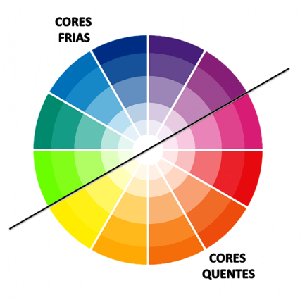
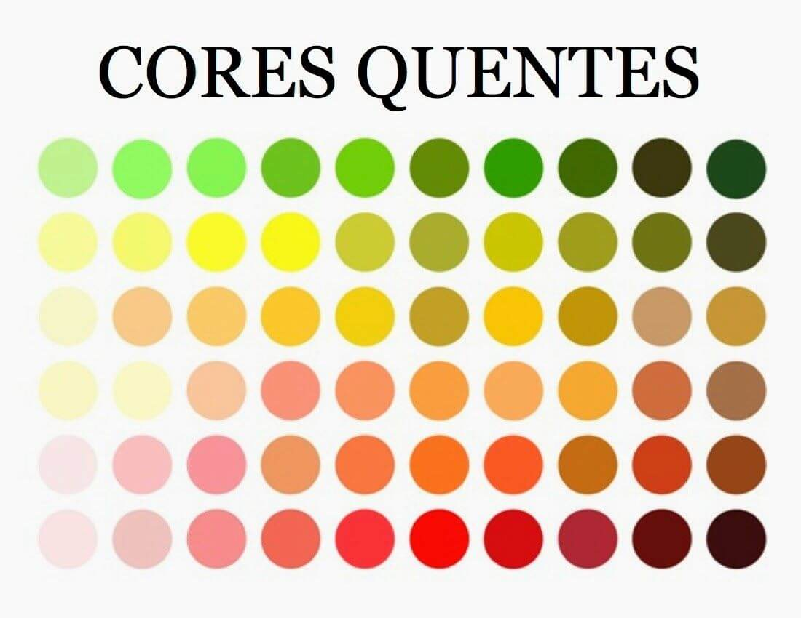
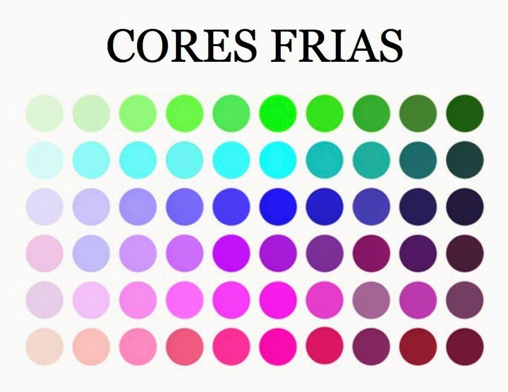
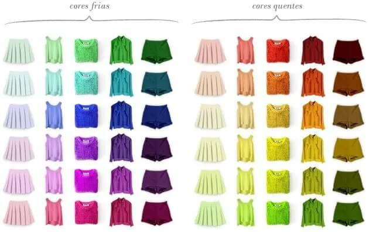
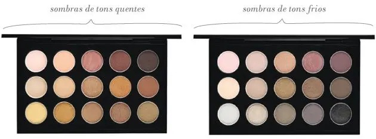
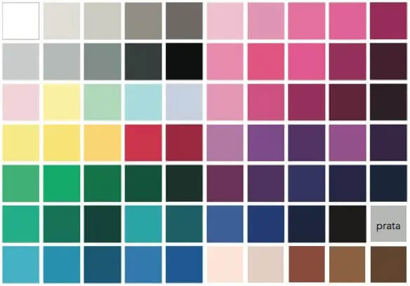

Beleza
Análise de Coloração
A cor está em tudo! Usamos a cor diariamente para várias coisas: para escolher os alimentos, a roupa, o tênis, o carro, a decoração e principalmente o look.
As cores também tem uma característica de temperatura, sendo divididas entre cores quentes e cores frias. As cores quentes transmitem mensagens de extroversão e são dilatadoras, ou seja, elas tendem a aumentar a superfície que colorem. Portanto é uma boa utilizá-las em partes do corpo que você queira destacar.
Já as cores frias, como o próprio nome indica são a vertente oposta e transmitem mensagens de discrição. Além disso, elas são cores de contração, ou seja, tendem a diminuir a superfície que colorem. Por isso são boas aliadas para dar aquela sensação de emagrecimento e para disfarçar áreas para as quais não queremos chamar atenção.
Quanto mais amarelo uma mistura, mais quente. Quando mais azul, mais frio. O violeta, por exemplo é uma cor que tradicionalmente tem bastante azul na composição e por isso seria uma cor fria. Já o laranja, que tem mais amarelo, seria uma cor quente. E como a gente explica isso na análise?
A nossa pele também tem essa variação. Quanto mais próximo do branco é o sub-tom da pele mais frio ( sub-tom e não tom). Quanto mais próximo do amarelo, mais quente. E ao determinar esta característica, podemos aplicar nas nossas roupas acessórias, maquiagem e até o cabelo. Se a pele é fria, recomenda-se o uso de cores frias. Se a pele é quente recomenda-se o uso de cores quentes.
  Na consultoria de imagem e análise eu trabalho com tons. Ou seja, existem vermelhos quentes e vermelhos frios. Rosas quentes e rosas frios. Verdes quentes e verdes frios, Bejes quentes e frios... E por ai vai.
A vantagem disso é que a coloração pessoal te permite usar quase tudo, dede que o tom esteja certo. Por exemplo, a única cor que você não tem em nenhuma variação da sua cartela é laranja. Mas, você tem amarelos. Então para um dossiê completo, entre em contato comigo para uma consultoria de imagem. Verifique as opções.
Beijos!
GS
Voltar para a Página Principal